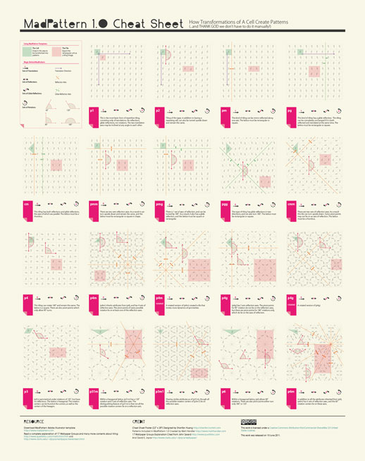
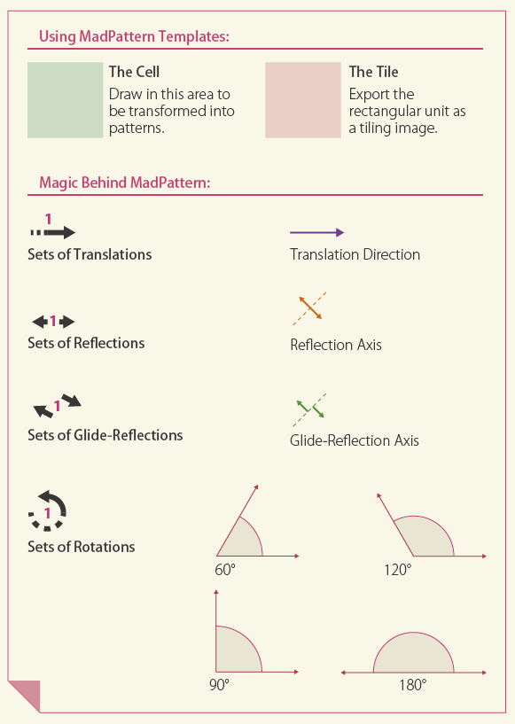

Design. Create. Play.
(cc)2011 Shanfan Huang

Disclaimer: This webpage is not tested in IE.
MadPattern 1.0 Cheatsheat
How Transformations of A Cell Create Patterns
(...and THANK GOD we don't have to do it mannually!)
MadPattern 1.0 is a set of (free!) Adobe Illustrator templates that, by applying the 17 Wallpapers' pattern principles, helps to design seamless kaleidoscopic patterns. It's super cool!
The problem is that Matt, the author, named all of his templates after the mathmatical identifier, such as "pg", "pm" or "p4g", which doesn't help to decide which template to use. I took the chance to thoroughly studied the 17 Wallpaper Group and made this cheatsheet to explain how each pattern is created and how to identify them. Click the above image you'll be able to download the cheatsheet in hi-res PDF format.
Here's a quick explanation:
So in each of the MadPattern templates, you draw in the green area, and the templates will magically duplicate and expand your green unit into a repeative pattern. This way it allows you to draw only in one unit but see the whole pattern and adjust your design accordingly. In the end you'll export the red area, which can be seamlessly tiled as your website background or textile prints.
And the magic behind?
The mathmaticians defined four types of symmetrical movements on a plane:
- Translation (means the object duplicates itself along a certain direction),
- Reflection,
- Glide-Reflection (means the object shifts its position before it mirrors itself),
- and Rotation.
Each pattern in the 17 Wallpaper Group is generated by a combination of these four movements.